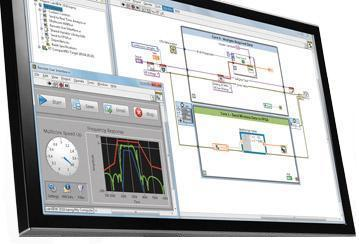

|  |
- LabVIEW - mediu grafic de programare
- Programarea in mediul LabVIEW presupune un set de simboluri grafice prin intremediul carora se codifica un program
- Realizarea unui program consta in plasarea simbolurilor grafice intr-o diagrama blc
- Un program in LabVIEW este deci o diagrama grafica
- Mediul LabVIEW se interfateaza cu diverse sisteme hardware si instrumentatie pentru controlul diverselor procese.
- In LabVIEW se pot realiza usor si intuitiv aplicatii pentru controlul proceselor, analizei datelor si distribuirii acestora
- LabVIEW este mediul care realizeaza extrem de simplu, conexiunea intre intrarile si iesirile unui sistem hardware la calculator
|
|